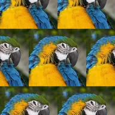

Mga Tile

Inuulit ang layer para mapuno ang screen. Taasan ang Crop para lumiit ang mga tile, na may opsyonal na pag-mirror, offset ng mga row at pag-ikot. Pinapanatili ng Legacy scale ang mga lumang proyekto. Kapag Sa loob ng tile ang Sizing, kasinlaki ng layer ang bawat tile at ini-zoom at iniikot ang larawan sa loob nito.
Mga Setting
| Setting | Uri | Saklaw | Default |
|---|---|---|---|
| Crop | Numero | 0.005 hanggang 20 | 1 |
| Offset | Numero | -100 hanggang 100 | 0 |
| Mirror | Naka-on o naka-off | – | Naka-off |
| Offset nang patayo | Naka-on o naka-off | – | Naka-off |
| Anggulo | Anggulo | -1800° hanggang 1800° | 0° |
| Sizing | Pagpipilian | Crop, Legacy scale, Sa loob ng tile | Crop |